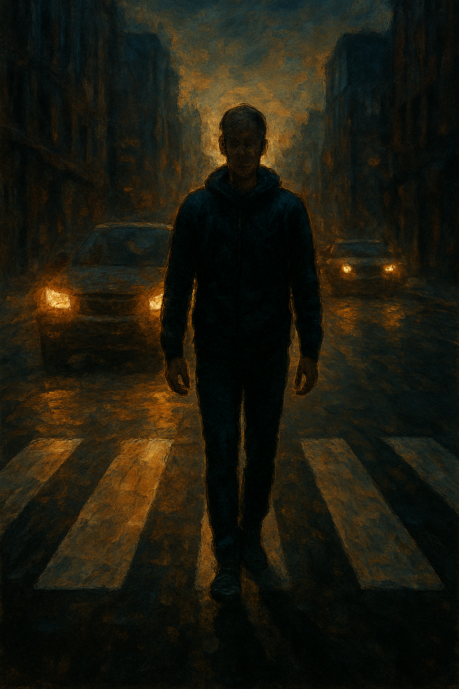

Las personas que le dan la espalda a la vida
Hay cosas que me resultan imposibles de comprender. Digo imposibles porque, por más que uno se esfuerce, hay decisiones humanas que parecen desafiar la lógica. Son esas elecciones que te dejan preguntando: ¿por qué carajo alguien haría eso?
El suicidio, por ejemplo —aunque no sea el tema central acá— es una de esas decisiones que nos dejan sin respuesta. Una vez escuché a un falso predicador decir que el suicidio es entrar en un estado de inconsciencia total. Pero si lo pienso bien, el ser humano ya vive en distintos grados de inconsciencia todo el tiempo. No hace falta irse de este mundo para comprobarlo.
El conductor resignado
Soy el chofer oficial de mi familia. Básicamente porque soy el único que sabe manejar. Aclaro: no me gusta manejar. Me resulta tedioso. Desde que vi esos Jaguar I-PACE que se manejan solos, equipados con sensores, cámaras y software de inteligencia artificial que “detecta, resuelve y avanza”, supe que esas máquinas ya lo hacen mejor que yo. Y seguro insultan más elegante que cualquier tachero de mi ciudad.
Pero hasta que esos autos sean algo más que un sueño de clase media, me toca a mí: llevar a mi hija a la escuela, buscar a mi mujer del trabajo, hacer las vueltas de la vida diaria. Y aunque detesto manejar, lo que realmente me resulta incomprensible no son los embotellamientos ni los colectiveros que se te cruzan, sino otra especie urbana: los peatones que cruzan la calle de espaldas.
El misterio del peatón suicida
Lo digo en serio: de todas las preguntas existenciales que podría hacerle a la supercomputadora de La Guía del Autoestopista Galáctico (ficción humorística escrita por Douglas Adam), antes de preguntarle por el sentido de la vida le preguntaría:
¿Por qué hay peatones que cruzan la calle de espaldas al tránsito?
¿Es inconsciencia? ¿Negligencia? ¿Una mezcla de imprudencia con confianza ciega en que el conductor siempre va a frenar?
Al principio, mi reacción era desmedida: puteadas al aire, bocinazos, indignación. Después me volví más pedagógico: intenté explicarles a algunos mayores que esa forma de cruzar era peligrosa. El resultado fue nefasto. Una señora me respondió sin dudar:
—Andá a cagar, pendejo de mierda.
Sorprendido, apenas atiné a preguntar:
—¿Perdón?
—No te perdono, pendejo otaku, seguro jugás al Fortnite con esa cara de pelotudo.
Quizás lo de Otaku se dio cuenta porque justo ese día me puse una remera con la cara de Ranma Saotome de Ranma ½ y lo de Fortnite no sé cómo me sacó la ficha. Desde entonces, abandoné la misión educativa y decidí devolver el golpe con insultos. Si un viejo me cruza de espaldas, le grito:
—¡Viejo viagrero!, ¿de espalda vas a cruzar la calle?
Y con las señoras prefiero reservarme lo que digo.
¿Espaldas al auto o espaldas a la vida?
Después de tantas puteadas me puse a pensar. ¿Será que esa manera de cruzar esconde algo más profundo? Puede que sea rebeldía adolescente (aunque los jóvenes rara vez lo hacen), confianza ciega en que “nunca me va a pasar nada”, o incluso una especie de fatalismo barato: “si me tiene que atropellar, me va atropellar, aunque mire”.
Quizás, al darle la espalda al auto, también le estén dando la espalda a la vida. Como si hubieran perdido la motivación de participar activamente en su presente y futuro. Como si evitaran enfrentar responsabilidades o compromisos. Una renuncia silenciosa, disfrazada de imprudencia vial.
En definitiva, la diferencia entre “darle la espalda a un auto” y “darle la espalda a la vida” no es tan grande. La primera puede terminar en un golpe seco contra el asfalto; la segunda en una existencia chata, sin ganas de mirar hacia adelante.
Reflexión final
Cada vez que un peatón cruza de espaldas y me lo encuentro en el camino, me acuerdo de aquella señora que me mandó a cagar. Y entonces lo puteo, en su honor. Pero después, ya más tranquilo, pienso que quizá esos peatones son una metáfora ambulante de lo que somos como sociedad: gente caminando a ciegas, convencida de que los demás siempre van a frenar para no matarnos.
El problema es que la vida, a diferencia del tránsito, no siempre pone el pie en el freno.